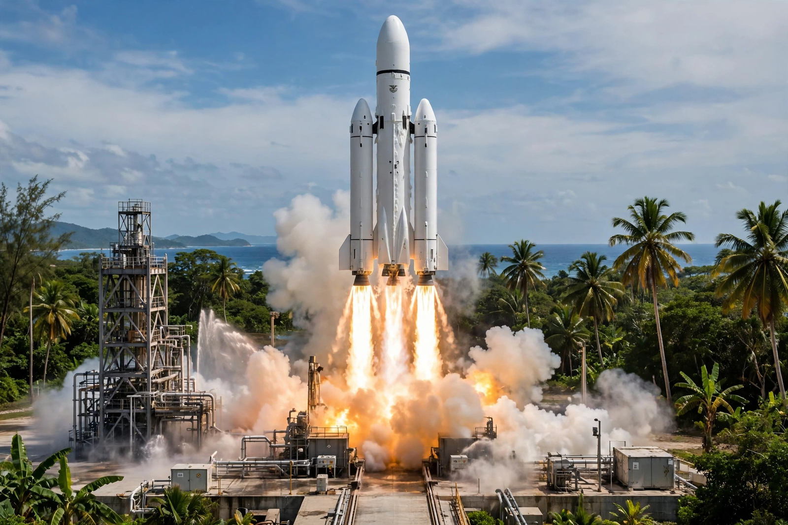

Ariane 6
From Wikipedia, the free encyclopedia
| Ariane 6 | |
|---|---|
| Operator | Arianespace / ESA |
| First flight | 9 July 2024 |
| Variants | Ariane 62 (2 boosters), Ariane 64 (4 boosters) |
| Replaces | Ariane 5 |

Ariane 6's maiden flight.Ariane 6 is a European expendable launch system developed by ArianeGroup for ESA and operated by Arianespace, the successor to the retired Ariane 5. It first flew on 9 July 2024 from the Guiana Space Centre — restoring Europe's independent heavy-lift capability after a gap year that had forced European payloads onto American rockets.
Ariane 6 comes in two forms: the two-booster Ariane 62 and the four-booster Ariane 64, roughly matching Ariane 5's performance at lower recurring cost through streamlined production. Its upper stage's Vinci engine can restart repeatedly, enabling complex multi-orbit deployments — the feature that marred the otherwise successful maiden flight when a final demonstration burn was curtailed by an auxiliary power unit fault.
Context
Designed in 2014 for a market that assumed reusability was a fad, Ariane 6 arrived into a SpaceX-dominated world to which Europe's answer is deliberately conservative: sovereign access first, competition second. Its manifest mixes institutional missions (Galileo, Earth observation) with Amazon Kuiper commercial batches.
See also
Ariane 5 · Guiana Space Centre · Galileo (satellite navigation)